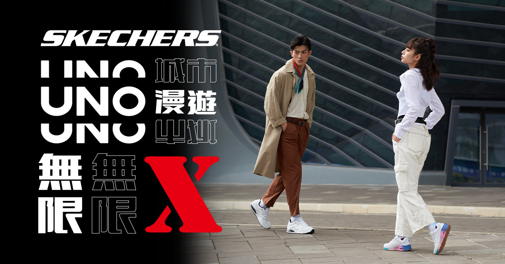

Hand-drawn warmth in a
tech-driven brand matrix.
科技品牌矩陣中的
手繪溫度。

Challenge挑戰
The classic UNO collection within SKECHERS' broader portfolio needed differentiated visual presence — standing out from the brand's machine-led performance language while building emotional proximity with young consumers (the deliberate anti-target was the SKECHERS comfort-mom segment). The category challenge: most footwear in this space defaults to either retro-athletic or urban-casual codes — both already saturated. SKECHERS 品牌矩陣中的經典款 UNO 系列需要差異化視覺存在 — 在 SKECHERS 主品牌的「機能運動」語言之外,與年輕消費族群建立情感親近(刻意排除的客群是 SKECHERS 既有的舒適媽媽族群)。品類挑戰:這個賽道的視覺語言多數預設走復古運動或都會休閒 — 兩個方向已經飽和。
Strategy策略
Led the creative direction in cross-functional partnership with the planning team — defined a hand-drawn typographic direction chosen to tap into the rising hand-drawn aesthetic in 2022 youth social-media culture, conveying diary-like emotional warmth that an industrial/printed language couldn't deliver. Localization decision: rejected direct adoption of SKECHERS' US-market visual codes — Taiwan's young consumer culture reads emotional warmth and locality differently. Led the full creative direction from brand positioning through to live front-end — defining the visual system, then driving execution across logo, layout, static + motion, and HTML/CSS/JS Landing Page implementation. 與企劃跨部門協作主導創意方向 — 定調手寫風格對應 2022 年輕世代社群文化中崛起的手寫美學風潮,傳達「日記般」的情感溫度,這是印刷感/工業感的語言做不到的。在地化決策:否決直接沿用 SKECHERS 美國市場的視覺語言 — 台灣年輕消費文化對情感溫度與在地感的解讀方式不同。主導完整創意方向,從品牌定位到前端上線 — 定調視覺系統,並驅動 Logo、版面、靜態 + 動態、HTML/CSS/JS Landing Page 全鏈路執行。
Why direction-and-execution unity matters 為什麼方向與執行的一體化重要
The role at SKECHERS Taiwan combined creative direction and front-end execution by structural design. What I learned from inhabiting that role: this combined accountability solves a problem invisible until you've worked both sides — animation timing drifts, hand-drawn type renders inconsistently, hover micro-interactions get simplified for implementation speed. By holding both creative direction and front-end execution accountability, I eliminated the translation layer where brand details typically degrade — typography rendering, motion timing, micro-interaction fidelity all survived intact. 思克威爾這個職位的結構性設計就是「創意方向 + 前端執行」雙重責任。從這個角色學到的:這種合一式的責任歸屬解決了一個「不做兩邊就看不見」的問題 — 動態 timing 偏移、手寫字體渲染不一致、hover 微互動被簡化為實作便利。同時握有創意方向決策與前端執行責任,我消除了品牌細節通常會退化的翻譯層 — 字體渲染、動態 timing、微互動保真度全部完整保留。
Result成果
- Differentiated visual assets for UNO collection, extending across e-commerce and retail channels. 為 UNO 系列建立差異化視覺資產,延伸至電商與店頭通路。
- Direction-and-execution unity from design file to live front-end — full creative accountability, no detail lost in handoff. 方向與執行一體,從設計稿到前端上線 — 完整創意責任歸屬,品牌細節無妥協。
- Consistent visual asset library reusable across the UNO collection lifecycle. 可重複使用的 UNO 系列視覺資產庫。
Future Direction (if revisiting in 2026) 未來方向(假設 2026 年重啟)
The 2022 hand-drawn diary aesthetic established UNO's emotional differentiation — but the audience has aged with the brand. The next-season direction I'd propose: preserve the hand-drawn aesthetic as UNO's brand anchor, but split the visual language by generational reading: 2022 年的手寫日記美學成功建立 UNO 的情感差異化 — 但客群已隨品牌一起變老。下一季我會提的方向:保留手寫美學作為 UNO 的品牌錨點,但依世代解讀切分視覺語法:
- 25–30 segment: lean further into individuality and lo-fi expression — looser hand lettering, candid layouts. 25–30 歲族群:加深個性與 lo-fi 表達 — 更鬆散的手寫筆觸、更直覺的版面。
- 30–44 segment: refined hand-drawn vocabulary — more deliberate strokes, tighter typographic discipline, premium paper textures. 30–44 歲族群:精煉的手寫語彙 — 更刻意的筆觸、更收束的字體紀律、紙張質感升級。
The principle: a brand language that ages with its audience without alienating new entrants. 核心原則:讓品牌語言隨客群一起成熟,但不會排擠新加入者。